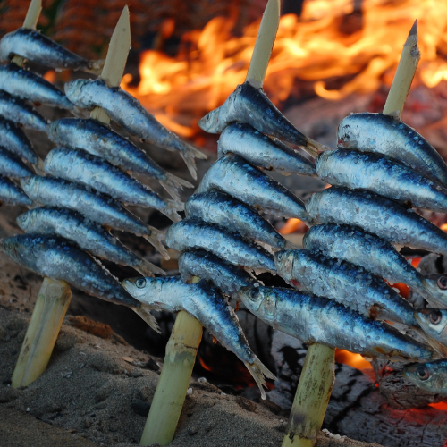
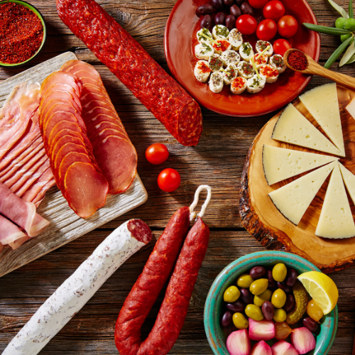
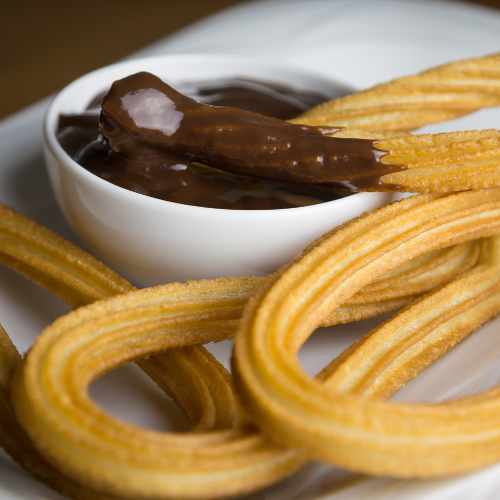
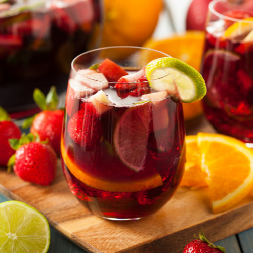

Digital Nomads Malaga
Traditional Food in Malaga
People in southern Spain are extremely passionate about food. No matter if it's at home, on the beach, or in a restaurant on the Costa del Sol, they enjoy having meals together with friends and family. Fresh fish, seasonal fruits and vegetables, olives, almonds, grapes, raisins, sweet wine, and of course delicious baked goods are all easily found throughout the city.
Let’s browse through some of the most famous and traditional food around or join our community to share and go out together for a meal!

Espeto De Sardinas
Sardines, a popular ingredient in Andalusian cooking as well as other Mediterranean cuisines. It is the star ingredient of Malaga's most well-known dish, ESPETO DE SARDINAS. Sardines are available practically anywhere in Malaga and the Costa del Sol. Malaga beach bars (chiringuitos) are the main top places to eat delicious, fresh sardines. Each chiringuito has a barbecue small boat setup of its own. They roast the sardines there after skewering them. They are delicious beyond belief! Due to the freshness of everything, these chiringuitos are also perfect for eating various kinds of fish or shellfish.

Paella
Paella is thought to have been created by the perfect fusion of two Spanish civilizations—the Romans, who brought the pan, and the Arabs, who brought the rice. The dish is typically spiced with saffron but may also contain other herbs and spices depending on the recipe and region of Spain from which it is made. In Malaga, it is nearly always exceptional due to the freshness of seafood, especially the enormous prawns and juicy muscles that make up its main ingredient. Enjoy this excellent huge dish with friends and family.

Charcutterie Platters
Spanish cured Iberian ham, particularly jamón Ibérico, is popular and similar to Italian salami. Since 1820, the Malaga-based Prolongo firm has produced excellent ham and sausage. The traditional salchichon, a pork and beef sausage with a secret seasoning, is made by this company and is a staple in Malaga. Its flavour and silky texture set it apart from similar products. This salchichón can be consumed on its own or with bread, but it can also be used to prepare foods like salchichón tartar, pâté, and croquettes.

Churros dipped in hot chocolate
If you ever take a morning stroll through Malaga's beautiful streets, there is a good chance that you will pass cafes serving Churros Con Chocolate. Churros are a favourite sweet in Spain and Portugal as well as Latin American nations including Mexico, Venezuela, and Ecuador. In Spain, Churros are largely consumed with a cup of hot chocolate for breakfast. Undoubtedly, if you are watching your calorie intake, this is not the best breakfast option, so watch out!

Drinks
Spanish people usually drink coffee in the morning, work for a while, take a siesta in the afternoon, and then work some more before relaxing with tapas and excellent wine with their loved ones in the evening.
There are nine reasons to adore Malaga in the morning, and they are all connected to coffee. Coffee paradise is when you can order your warm morning brew nine different ways. Therefore, no one will criticise your obsessive precision. The amount of coffee and milk in your cup is the secret to Malaga. In the city, it is nearly difficult to find bad coffee.
Later in the evening enjoy one of the nation's oldest wine-producing regions. Historically known as "mountain wine," is produced in Malaga, Spain. An highly distinctive sweet wine made mostly from white Moscatel and Pedro Ximenez grapes.Another popular choice is Sangria.